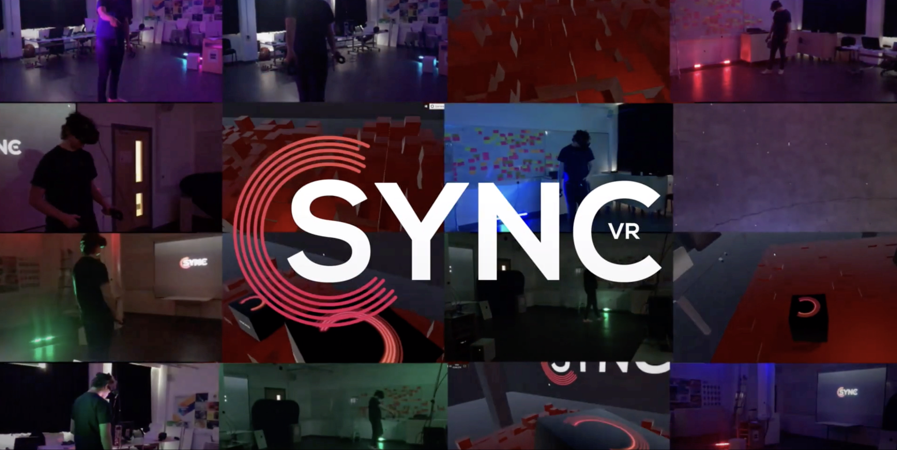
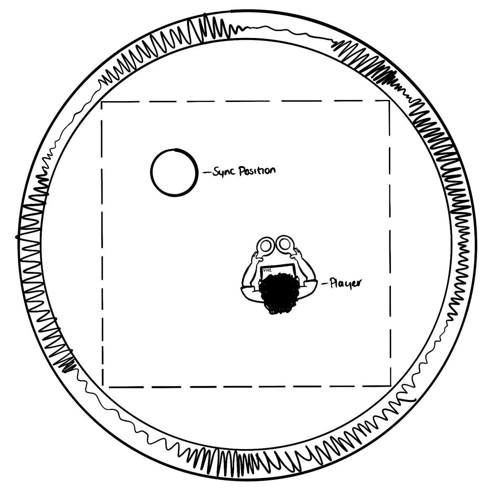
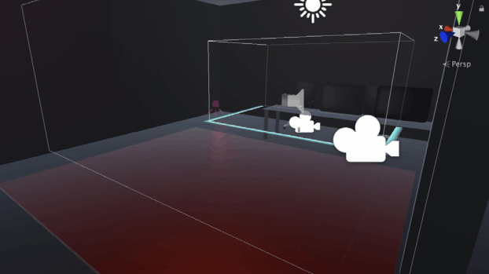
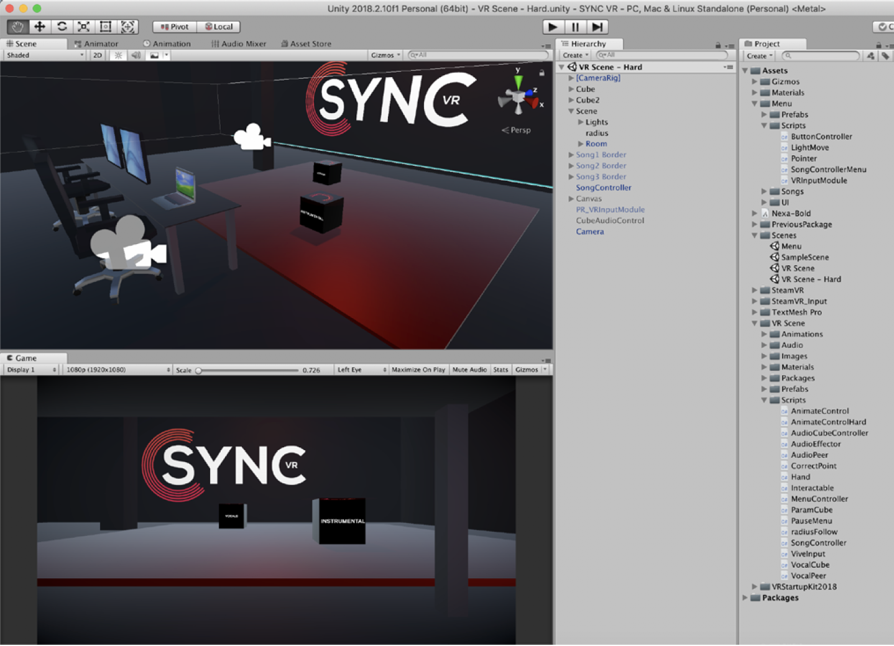
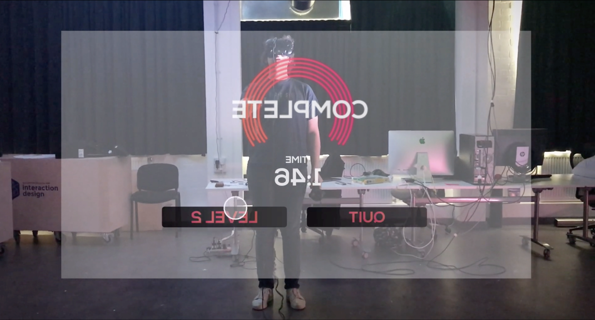

Create a sensor-based interface to allow users to interact with an audio-visual environment. This could be based on a physical- computing model using tools such as the Arduino system or a motion-tracking experience using the Gesture and Media System (GAMS) at Northern Dance in the Ouseburn. Students who wish to work with this system will need to specially request this as the numbers will be limited to 2 3 projects.
I created a VR Game that used the players position to influence the enviroment. It was an Audio Visual Game where effects were applied to music, distorting it. The players aim was to find the positions in the room where the music was normal and the effects weren't apparent. I used the HTC Vive and Unity to create this project and it was incredibly fun and rewarding.

The idea was simple, you'd be in a room with a song playing, the vocals and instrumental would be seperate from each other and have distorions applied. It was your job to find the place in the room where the music 'syncs' and sounds normal.
I originally planned to create a much simpler project, using an Arduino kit and ultrasonic sensor to measure the distance. But I realised I need to track a position within a 3D space and using a VR Headest allowed me to do this easily and add more opportunity for creativity.

Once I’d outlined the idea I began working on a prototype to test it. The prototype mainly focussed on altering sound using position, this was actually really straight forward as I could just take the positional value of something and convert into a value that could be applied to the pitch of the audio.
In my research I found a big fear with VR is becoming too immersed and walking into something, like a wall. So I worked hard to map out the room the project was based in that way you could have more confidence when using the system.

I made a second level that focussed the position of objects in a room rather than the player. It was a great addition and fun interaction. In this level there was now 2 objects to move around rather than your body. Each bbox controlled half the audio.

I wanted this to act as a full stand alone product so I created a UI for the game. This was probably the hardest part, as I had to detect what direction the VR controllers were facing.
